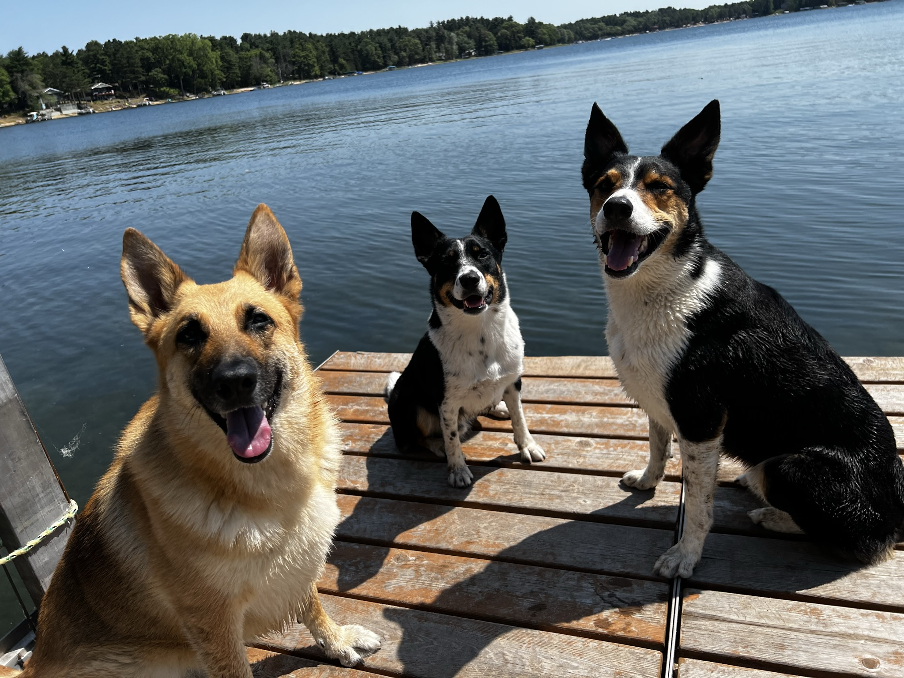

RESOURCE CENTER IN DEVELOPMENT
Everyday Dog Care
This topic library is still being developed. It will bring together practical resources about storms, travel, cameras, home setup, swimming, routines, and products only when real experience supports them.
